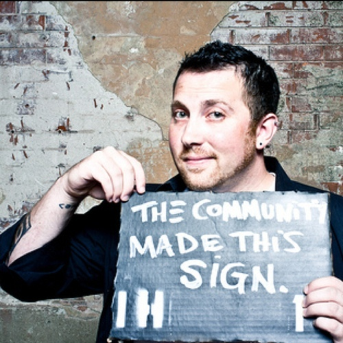

Join Amy on this free 40 minute tour through dozens of real-world brick-stacking examples.
Howdy. We're a couple of brick-stacking badasses.
Are you wondering who the heck we are, and why you should listen to us?
Amy Hoy

Amy Hoy quit her last (very cushy) job in 2007, opened up a consultancy for Fortune 100 companies, and then threw that all out the window to found a product biz... which she’d promised to do for years. Her empire includes Freckle, JavaScript Performance Rocks!, The JS Master Class, 30x500, the list goes on...
Alex Hillman
Alex Hillman is an international man of mystery. While he was still a freelance web developer, he founded Indy Hall, one of the world's first, largest, and longest running coworking spaces. Since, he's midwifed many products and businesses, teaches and consults with community and business leaders around the world, and of course co-teaches 30x500.